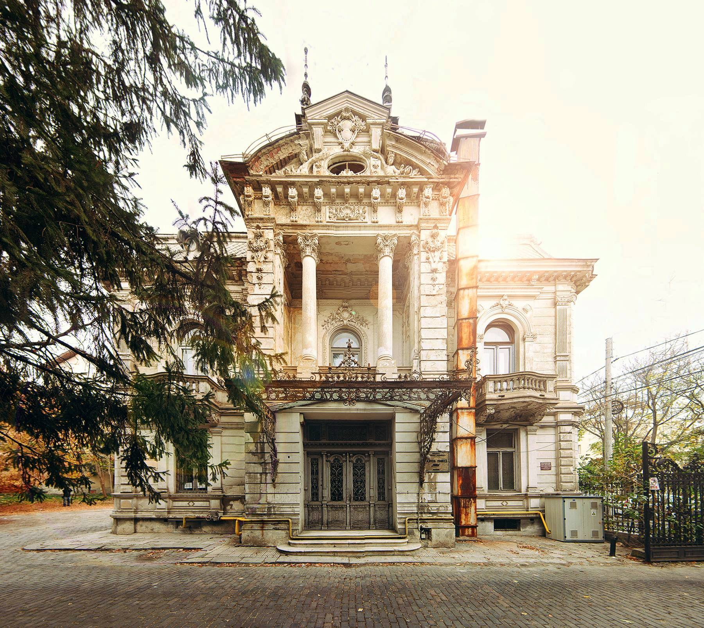

Bine ati venit!
 Acesta este site-ul de prezentare al celei mai mari biblioteci fizice in domeniul online din Romania!
Biblioteca NUME își desfășoară activitatea în municipiul Craiova, important centru cultural și economic al Olteniei. Municipiul Craiova are o populație estimată la aproximativ 300.000 de locuitori. Orașul se bucură de o viață culturală intensă, susținută de numeroase instituții publice de cultură: biblioteci, teatre, muzee, filarmonică, universități, și organizații non-guvernamentale de profil.
Biblioteca NUME desfășoară activități culturale comune cu diferite instituții de cultură și de învățământ în virtutea unor parteneriate/protocoale de colaborare. În ultimii ani, orașul a înregistrat o creștere fără precedent a evenimentelor culturale, inclusiv cele din domeniile culturii tradiționale, istoriei și al științelor naturii. Există toate premisele ca această evoluție pozitivă să se păstreze și în anii următori. Statutul dobândit de România, ca stat membru al Uniunii Europene, a creat oportunitatea accesării fondurilor europene, inclusiv în domeniul culturii, suplimentând astfel posibilitățile de finanțare a instituțiilor și proiectelor culturale, pe baze competitive. Analiza făcută contextului actual a identificat atât oportunități, cât și posibile riscuri din mediul extern, care pot influența evoluția Bibliotecii NUME.
Din dorinta de a promova lectura si de a ajunge la cat mai multa lume, Biblioteca vine si in spatiul online cu o numeroasa varietate de carti transpuse in format electronic si posibilitati de imprumutare carti fizice prin completarea unor simple formulare.
Influența evoluția Bibliotecii Județene „Alexandru și Aristia Aman”. Biblioteca Județeană „Alexandru și Aristia Aman” este o instituție publică, cu personalitate juridică, având caracter enciclopedic, care funcționează în subordinea Consiliului Județean Dolj, fiind finanțată de la bugetul de stat, asumându-și principalele atribuții de completare, organizare, conservare și valorificare a colecțiilor, prin întocmirea și organizarea instrumentelor proprii de informare, în sensul de a pune la dispoziția utilizatorilor informațiile solicitate, fie prin împrumutul la domiciliu, fie prin consultarea documentelor la sălile de lectură. Activitățile pe care le desfășoară Biblioteca Județeană „Alexandru și Aristia Aman” pun accentul pe educația permanentă a tinerilor utilizatori, dar și a adulților, promovarea continuă a laturii culturale, activitatea de cercetare și chiar de recreere. Fiind cea mai importantă bibliotecă publică din județul Dolj, preocupările permanente ale bibliotecii se manifestă în direcția diseminării și îmbunătățirii informațiilor și serviciilor prin intermediul cărții, în scopul atragerii către lectură a unui număr cât mai mare de utilizatori. Aproximativ 200.000 de cetățeni solicită sau frecventează anual Biblioteca Județeană „Alexandru și Aristia Aman” pentru a împrumuta cărți, pentru a organiza sau participa la diferite acțiuni culturale și educative sau pentru a căuta on-line informații despre probleme legate de sănătate, educație, locuri de muncă, dezvoltarea afacerilor, dar și pentru comunicarea cu rudele sau prietenii. În 2018 au fost împrumutate sau consultate aproximativ 250000 de documente din colecțiile bibliotecii. Numărul mare de cetățeni care folosesc serviciile Bibliotecii Județene „Alexandru și Aristia Aman” este un indicator relevant al influenței și importanței de care se bucură biblioteca. Pentru activitatea desfășurată, precum și pentru proiectele implementate, Biblioteca Județeană „Alexandru și Aristia Aman” a fost distinsă cu titlul „Biblioteca Anului” în cadrul Galelor APLER (Asociația Publicațiilor Literare și Editurilor din România), desfășurate în decembrie 2018 la București.

mail bibliotecanume.bname.ro
phone +0231 312 412
or on our location: Strada Vasile Alecsandri 91, Craiova.
or Facebook
or